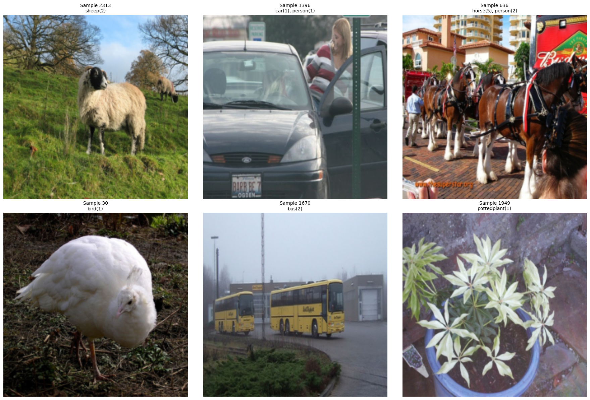

from torchvision.datasets import VOCDetection
from torchvision import models, transforms
import torch
import torch.nn.functional as F
from torch.utils.data import DataLoader
# Transform image to ResNet features
transform = transforms.Compose([
transforms.Resize((224, 224)),
transforms.ToTensor(),
])
# Load VOC 2007 detection dataset
dataset = VOCDetection(root='~/', year='2007', image_set='train', download=True, transform=transform)—title: “Multi-Image Classification with VOC Dataset Visualization”date: “2025-07-07”categories: [computer vision, deep learning, multi-label classification, data visualization]description: “Visualizing and filtering multi-image classification samples from the VOC dataset for improved training data quality”author: “Nipun Batra”—
import matplotlib.pyplot as plt
import numpy as np
from PIL import Image
import random
# Function to visualize multi-image classification samples
def visualize_samples(dataset, num_samples=8, grid_size=(2, 4)):
"""
Visualize samples from the dataset in a grid layout
"""
fig, axes = plt.subplots(grid_size[0], grid_size[1], figsize=(15, 8))
axes = axes.flatten()
# Sample random indices
indices = random.sample(range(len(dataset)), num_samples)
for i, idx in enumerate(indices):
image, target = dataset[idx]
# Convert tensor to PIL Image for display
if isinstance(image, torch.Tensor):
# Denormalize if needed and convert to numpy
img_np = image.permute(1, 2, 0).numpy()
img_np = np.clip(img_np, 0, 1)
else:
img_np = np.array(image)
axes[i].imshow(img_np)
axes[i].set_title(f'Sample {idx}')
axes[i].axis('off')
# Print annotation info
if 'annotation' in target:
objects = target['annotation']['object']
if isinstance(objects, list):
labels = [obj['name'] for obj in objects]
else:
labels = [objects['name']]
print(f"Sample {idx} contains: {', '.join(labels)}")
plt.tight_layout()
plt.show()
# Visualize samples
print("Visualizing multi-image classification samples from VOC dataset:")
visualize_samples(dataset)Visualizing multi-image classification samples from VOC dataset:
Sample 2348 contains: cat
Sample 1327 contains: sheep
Sample 591 contains: boat
Sample 67 contains: bird, bird
Sample 1270 contains: dog, dog
Sample 2037 contains: tvmonitor
Sample 1548 contains: bus
Sample 1180 contains: person, dog# Enhanced visualization with class statistics and bounding boxes
def visualize_with_stats(dataset, num_samples=6):
"""
Visualize samples with class statistics and bounding box overlays
"""
fig, axes = plt.subplots(2, 3, figsize=(18, 12))
axes = axes.flatten()
# Collect class statistics
all_classes = []
indices = random.sample(range(len(dataset)), num_samples)
for i, idx in enumerate(indices):
image, target = dataset[idx]
# Convert tensor to numpy for visualization
if isinstance(image, torch.Tensor):
img_np = image.permute(1, 2, 0).numpy()
img_np = np.clip(img_np, 0, 1)
else:
img_np = np.array(image) / 255.0 if np.max(image) > 1 else np.array(image)
axes[i].imshow(img_np)
# Extract and display class information
if 'annotation' in target:
objects = target['annotation']['object']
if not isinstance(objects, list):
objects = [objects]
classes_in_image = [obj['name'] for obj in objects]
all_classes.extend(classes_in_image)
# Create title with class info
class_counts = {}
for cls in classes_in_image:
class_counts[cls] = class_counts.get(cls, 0) + 1
title = f"Sample {idx}\n" + ", ".join([f"{cls}({count})" for cls, count in class_counts.items()])
axes[i].set_title(title, fontsize=10)
axes[i].axis('off')
plt.tight_layout()
plt.show()
# Show class distribution across samples
if all_classes:
from collections import Counter
class_counts = Counter(all_classes)
plt.figure(figsize=(12, 6))
plt.bar(class_counts.keys(), class_counts.values())
plt.title('Class Distribution in Sample Set')
plt.xlabel('Object Classes')
plt.ylabel('Count')
plt.xticks(rotation=45, ha='right')
plt.tight_layout()
plt.show()
print(f"Found {len(class_counts)} unique classes: {list(class_counts.keys())}")
# Run enhanced visualization
print("Enhanced multi-image classification visualization:")
visualize_with_stats(dataset)Enhanced multi-image classification visualization:
Found 7 unique classes: ['sheep', 'car', 'person', 'horse', 'bird', 'bus', 'pottedplant']# Filter out images with 0 labels
def filter_valid_samples(dataset):
"""
Filter dataset to only include samples with valid annotations
"""
valid_indices = []
for i in range(len(dataset)):
_, target = dataset[i]
# Check if annotation exists and has objects
if 'annotation' in target and 'object' in target['annotation']:
objects = target['annotation']['object']
if objects: # Not empty
valid_indices.append(i)
print(f"Original dataset size: {len(dataset)}")
print(f"Valid samples with labels: {len(valid_indices)}")
print(f"Filtered out {len(dataset) - len(valid_indices)} samples with 0 labels")
return valid_indices
# Get valid indices
valid_indices = filter_valid_samples(dataset)
# Create a filtered dataset wrapper
class FilteredDataset:
def __init__(self, original_dataset, valid_indices):
self.original_dataset = original_dataset
self.valid_indices = valid_indices
def __len__(self):
return len(self.valid_indices)
def __getitem__(self, idx):
original_idx = self.valid_indices[idx]
return self.original_dataset[original_idx]
# Create filtered dataset
filtered_dataset = FilteredDataset(dataset, valid_indices)Original dataset size: 2501
Valid samples with labels: 2501
Filtered out 0 samples with 0 labels# Visualize samples from filtered dataset
print("Visualizing samples from filtered dataset (only images with labels):")
visualize_samples(filtered_dataset)
print("\nEnhanced visualization with filtered dataset:")
visualize_with_stats(filtered_dataset)Visualizing samples from filtered dataset (only images with labels):
Sample 181 contains: bird
Sample 1501 contains: dog, car
Sample 485 contains: person, person, car, car
Sample 30 contains: bird
Sample 1997 contains: cat
Sample 2454 contains: chair, chair, person, person, person, person
Sample 660 contains: bird, bird, bird, bird, bird, bird, bird
Sample 1885 contains: car, car
Enhanced visualization with filtered dataset:
Found 6 unique classes: ['person', 'bottle', 'sofa', 'car', 'cat', 'pottedplant']# Map label names to vector
VOC_CLASSES = ['aeroplane', 'bicycle', 'bird', 'boat', 'bottle',
'bus', 'car', 'cat', 'chair', 'cow',
'diningtable', 'dog', 'horse', 'motorbike', 'person',
'pottedplant', 'sheep', 'sofa', 'train', 'tvmonitor']
label_to_index = {cls: i for i, cls in enumerate(VOC_CLASSES)}
def encode_labels(target):
objs = target['annotation']['object']
labels = torch.zeros(len(VOC_CLASSES))
if not isinstance(objs, list):
objs = [objs]
for obj in objs:
cls = obj['name']
labels[label_to_index[cls]] = 1
return labels# Create features via ResNet (just 1 batch for now)
resnet = models.resnet18(pretrained=True)
resnet.fc = torch.nn.Identity() # remove classifier
resnet.eval()/Users/nipun/base/lib/python3.12/site-packages/torchvision/models/_utils.py:208: UserWarning: The parameter 'pretrained' is deprecated since 0.13 and may be removed in the future, please use 'weights' instead.
warnings.warn(
/Users/nipun/base/lib/python3.12/site-packages/torchvision/models/_utils.py:223: UserWarning: Arguments other than a weight enum or `None` for 'weights' are deprecated since 0.13 and may be removed in the future. The current behavior is equivalent to passing `weights=ResNet18_Weights.IMAGENET1K_V1`. You can also use `weights=ResNet18_Weights.DEFAULT` to get the most up-to-date weights.
warnings.warn(msg)ResNet(
(conv1): Conv2d(3, 64, kernel_size=(7, 7), stride=(2, 2), padding=(3, 3), bias=False)
(bn1): BatchNorm2d(64, eps=1e-05, momentum=0.1, affine=True, track_running_stats=True)
(relu): ReLU(inplace=True)
(maxpool): MaxPool2d(kernel_size=3, stride=2, padding=1, dilation=1, ceil_mode=False)
(layer1): Sequential(
(0): BasicBlock(
(conv1): Conv2d(64, 64, kernel_size=(3, 3), stride=(1, 1), padding=(1, 1), bias=False)
(bn1): BatchNorm2d(64, eps=1e-05, momentum=0.1, affine=True, track_running_stats=True)
(relu): ReLU(inplace=True)
(conv2): Conv2d(64, 64, kernel_size=(3, 3), stride=(1, 1), padding=(1, 1), bias=False)
(bn2): BatchNorm2d(64, eps=1e-05, momentum=0.1, affine=True, track_running_stats=True)
)
(1): BasicBlock(
(conv1): Conv2d(64, 64, kernel_size=(3, 3), stride=(1, 1), padding=(1, 1), bias=False)
(bn1): BatchNorm2d(64, eps=1e-05, momentum=0.1, affine=True, track_running_stats=True)
(relu): ReLU(inplace=True)
(conv2): Conv2d(64, 64, kernel_size=(3, 3), stride=(1, 1), padding=(1, 1), bias=False)
(bn2): BatchNorm2d(64, eps=1e-05, momentum=0.1, affine=True, track_running_stats=True)
)
)
(layer2): Sequential(
(0): BasicBlock(
(conv1): Conv2d(64, 128, kernel_size=(3, 3), stride=(2, 2), padding=(1, 1), bias=False)
(bn1): BatchNorm2d(128, eps=1e-05, momentum=0.1, affine=True, track_running_stats=True)
(relu): ReLU(inplace=True)
(conv2): Conv2d(128, 128, kernel_size=(3, 3), stride=(1, 1), padding=(1, 1), bias=False)
(bn2): BatchNorm2d(128, eps=1e-05, momentum=0.1, affine=True, track_running_stats=True)
(downsample): Sequential(
(0): Conv2d(64, 128, kernel_size=(1, 1), stride=(2, 2), bias=False)
(1): BatchNorm2d(128, eps=1e-05, momentum=0.1, affine=True, track_running_stats=True)
)
)
(1): BasicBlock(
(conv1): Conv2d(128, 128, kernel_size=(3, 3), stride=(1, 1), padding=(1, 1), bias=False)
(bn1): BatchNorm2d(128, eps=1e-05, momentum=0.1, affine=True, track_running_stats=True)
(relu): ReLU(inplace=True)
(conv2): Conv2d(128, 128, kernel_size=(3, 3), stride=(1, 1), padding=(1, 1), bias=False)
(bn2): BatchNorm2d(128, eps=1e-05, momentum=0.1, affine=True, track_running_stats=True)
)
)
(layer3): Sequential(
(0): BasicBlock(
(conv1): Conv2d(128, 256, kernel_size=(3, 3), stride=(2, 2), padding=(1, 1), bias=False)
(bn1): BatchNorm2d(256, eps=1e-05, momentum=0.1, affine=True, track_running_stats=True)
(relu): ReLU(inplace=True)
(conv2): Conv2d(256, 256, kernel_size=(3, 3), stride=(1, 1), padding=(1, 1), bias=False)
(bn2): BatchNorm2d(256, eps=1e-05, momentum=0.1, affine=True, track_running_stats=True)
(downsample): Sequential(
(0): Conv2d(128, 256, kernel_size=(1, 1), stride=(2, 2), bias=False)
(1): BatchNorm2d(256, eps=1e-05, momentum=0.1, affine=True, track_running_stats=True)
)
)
(1): BasicBlock(
(conv1): Conv2d(256, 256, kernel_size=(3, 3), stride=(1, 1), padding=(1, 1), bias=False)
(bn1): BatchNorm2d(256, eps=1e-05, momentum=0.1, affine=True, track_running_stats=True)
(relu): ReLU(inplace=True)
(conv2): Conv2d(256, 256, kernel_size=(3, 3), stride=(1, 1), padding=(1, 1), bias=False)
(bn2): BatchNorm2d(256, eps=1e-05, momentum=0.1, affine=True, track_running_stats=True)
)
)
(layer4): Sequential(
(0): BasicBlock(
(conv1): Conv2d(256, 512, kernel_size=(3, 3), stride=(2, 2), padding=(1, 1), bias=False)
(bn1): BatchNorm2d(512, eps=1e-05, momentum=0.1, affine=True, track_running_stats=True)
(relu): ReLU(inplace=True)
(conv2): Conv2d(512, 512, kernel_size=(3, 3), stride=(1, 1), padding=(1, 1), bias=False)
(bn2): BatchNorm2d(512, eps=1e-05, momentum=0.1, affine=True, track_running_stats=True)
(downsample): Sequential(
(0): Conv2d(256, 512, kernel_size=(1, 1), stride=(2, 2), bias=False)
(1): BatchNorm2d(512, eps=1e-05, momentum=0.1, affine=True, track_running_stats=True)
)
)
(1): BasicBlock(
(conv1): Conv2d(512, 512, kernel_size=(3, 3), stride=(1, 1), padding=(1, 1), bias=False)
(bn1): BatchNorm2d(512, eps=1e-05, momentum=0.1, affine=True, track_running_stats=True)
(relu): ReLU(inplace=True)
(conv2): Conv2d(512, 512, kernel_size=(3, 3), stride=(1, 1), padding=(1, 1), bias=False)
(bn2): BatchNorm2d(512, eps=1e-05, momentum=0.1, affine=True, track_running_stats=True)
)
)
(avgpool): AdaptiveAvgPool2d(output_size=(1, 1))
(fc): Identity()
)# Load a few examples
X_feat = []
Y_labels = []
for i in range(10): # just 10 images
img, target = dataset[i]
with torch.no_grad():
feat = resnet(img.unsqueeze(0)).squeeze()
X_feat.append(feat)
Y_labels.append(encode_labels(target))
X = torch.stack(X_feat)
Y = torch.stack(Y_labels)
print("Feature shape:", X.shape) # (10, 512)
print("Label shape:", Y.shape) # (10, 20)Feature shape: torch.Size([10, 512])
Label shape: torch.Size([10, 20])import torch.nn.functional as F
# Assume X, Y are from your setup (after filtering out label-less samples)
n, d = X.shape # e.g., (num_samples, 512)
c = Y.shape[1] # number of classes, e.g., 20
k = 2 # top-k
# Linear classifier: feature → class logits
W = torch.nn.Parameter(torch.randn(d, c) * 0.01)
b = torch.nn.Parameter(torch.zeros(c))
optimizer = torch.optim.Adam([W, b], lr=0.1)
def soft_topk_gumbel(logits, k, temperature=0.5):
"""
Differentiable Top-k using Gumbel softmax.
Returns soft probabilities over classes (still sums to 1).
"""
u = torch.rand_like(logits)
gumbel = -torch.log(-torch.log(u + 1e-9) + 1e-9)
y = F.softmax((logits + gumbel) / temperature, dim=-1)
return y# Show usage of soft_topk_gumbel
logits = X @ W + b # (n, c)
topk_probs = soft_topk_gumbel(logits, k)
# Print top-k probabilities
print("Top-k probabilities (soft):", topk_probs)Top-k probabilities (soft): tensor([[9.9637e-01, 5.5686e-06, 1.1433e-05, 1.7464e-03, 2.9628e-05, 2.5912e-05,
3.8748e-04, 1.6770e-05, 6.6612e-05, 3.5153e-04, 6.6189e-04, 1.0212e-04,
3.4765e-05, 7.5857e-07, 2.3704e-06, 3.5112e-05, 1.3627e-05, 1.7078e-05,
4.9879e-06, 1.1496e-04],
[1.3692e-04, 1.7046e-03, 1.1450e-02, 2.1333e-03, 1.6845e-02, 2.9369e-03,
1.2837e-03, 8.2537e-02, 2.2774e-03, 5.7773e-01, 1.9119e-02, 3.0098e-02,
8.0061e-02, 1.5937e-03, 7.2541e-03, 8.4785e-04, 4.1571e-04, 1.5525e-01,
6.2160e-03, 1.0786e-04],
[1.9352e-04, 1.0938e-03, 4.8861e-04, 1.9047e-04, 7.6948e-04, 8.2843e-06,
5.2209e-04, 2.3692e-04, 4.5732e-05, 6.2262e-05, 2.5813e-01, 2.1752e-03,
3.5717e-05, 9.8115e-05, 1.9879e-05, 4.3296e-01, 5.4662e-05, 1.3929e-04,
3.0202e-01, 7.5792e-04],
[1.5340e-03, 7.5786e-04, 5.9654e-04, 2.1572e-02, 1.8610e-03, 7.1698e-02,
3.9615e-04, 8.4081e-03, 4.5102e-04, 3.2607e-03, 9.2715e-05, 4.3540e-04,
3.9905e-04, 2.2774e-04, 1.8877e-02, 5.1009e-04, 7.3521e-05, 7.2970e-04,
6.0689e-04, 8.6751e-01],
[2.5415e-02, 3.9400e-03, 3.6639e-02, 8.7555e-04, 3.3244e-03, 6.0198e-01,
3.6003e-04, 2.6875e-03, 3.0044e-02, 7.1293e-03, 4.6280e-03, 4.7834e-03,
1.4265e-01, 4.3053e-04, 3.4352e-02, 3.8278e-03, 4.4233e-04, 7.8145e-03,
2.0124e-02, 6.8553e-02],
[4.4649e-05, 1.8430e-06, 9.9023e-01, 2.7039e-04, 3.5734e-03, 2.2861e-04,
4.8410e-05, 7.4725e-05, 5.7184e-05, 2.3577e-04, 6.4974e-04, 1.7584e-04,
2.6029e-06, 1.3072e-05, 2.8582e-03, 6.2194e-05, 5.6130e-05, 1.8603e-04,
2.1274e-04, 1.0192e-03],
[2.3497e-06, 1.2135e-07, 1.5929e-08, 1.5253e-07, 3.9580e-05, 2.0947e-07,
4.4549e-09, 2.3253e-08, 3.4983e-07, 2.9724e-08, 9.9996e-01, 1.0750e-08,
2.6384e-09, 7.6717e-09, 4.5450e-08, 4.3954e-08, 1.5642e-07, 8.4024e-08,
3.6031e-07, 1.4754e-08],
[8.1039e-03, 1.7787e-01, 1.6831e-03, 4.3872e-04, 2.9426e-03, 5.5057e-02,
6.6967e-04, 3.8483e-04, 8.5775e-04, 8.0399e-04, 2.9508e-05, 3.9925e-02,
2.2405e-04, 7.5683e-03, 1.1257e-03, 3.1749e-01, 3.7134e-04, 9.4618e-05,
1.5528e-04, 3.8420e-01],
[1.9725e-01, 4.9626e-03, 3.9545e-03, 3.6807e-03, 1.5253e-01, 6.0438e-02,
1.0398e-01, 9.6713e-03, 1.2231e-03, 1.3201e-03, 3.9723e-01, 8.7617e-03,
1.8142e-04, 2.5875e-03, 5.9216e-03, 2.0202e-02, 6.0090e-04, 2.3910e-03,
4.5311e-03, 1.8586e-02],
[3.9637e-04, 1.0494e-02, 3.1460e-03, 7.4261e-02, 2.2233e-04, 4.9184e-05,
2.4709e-04, 1.2365e-03, 6.2048e-03, 3.0160e-02, 1.0388e-02, 2.2024e-02,
4.8142e-03, 3.1339e-02, 2.4362e-04, 5.5612e-04, 1.4853e-02, 1.4207e-02,
1.9317e-02, 7.5584e-01]], grad_fn=<SoftmaxBackward0>)topk_preds = torch.topk(topk_probs, k=2, dim=1).indices
# Print top-k predictions
print("Top-k predictions (indices):", topk_preds)Top-k predictions (indices): tensor([[ 0, 3],
[ 9, 17],
[15, 18],
[19, 5],
[ 5, 12],
[ 2, 4],
[10, 4],
[19, 15],
[10, 0],
[19, 3]])# Print ground truth vs predictions
print("Ground truth vs predictions:")
for i in range(len(Y)):
print("GT:", torch.nonzero(Y[i]).squeeze().tolist(),
"Pred:", topk_preds[i].tolist())Ground truth vs predictions:
GT: 6 Pred: [0, 3]
GT: [12, 14] Pred: [9, 17]
GT: [1, 14] Pred: [15, 18]
GT: 6 Pred: [19, 5]
GT: [0, 14] Pred: [5, 12]
GT: 0 Pred: [2, 4]
GT: 18 Pred: [10, 4]
GT: [10, 14] Pred: [19, 15]
GT: 11 Pred: [10, 0]
GT: 18 Pred: [19, 3]# Precision@k
correct = 0
for i in range(len(Y)):
correct += Y[i][topk_preds[i]].sum().item()
print(f"Precision@{k} = {correct / (len(Y) * k):.2f}")Precision@2 = 0.00for epoch in range(100):
total_loss = 0.0
for i in range(n):
x_i = X[i] # (d,)
y_true = Y[i] # (c,)
logits = x_i @ W + b # (c,)
probs = soft_topk_gumbel(logits, k=k, temperature=0.5)
# Loss: encourage probs to match true multi-hot labels
match = torch.sum(probs * y_true)
loss = -match # maximize match with true labels
optimizer.zero_grad()
loss.backward()
optimizer.step()
total_loss += loss.item()
if epoch % 10 == 0:
print(f"Epoch {epoch}, Avg Loss: {total_loss/n:.4f}")Epoch 0, Avg Loss: -0.1000
Epoch 10, Avg Loss: -0.2000
Epoch 20, Avg Loss: -0.2000
Epoch 30, Avg Loss: -0.2000
Epoch 40, Avg Loss: -0.2000
Epoch 50, Avg Loss: -0.2000
Epoch 60, Avg Loss: -0.2000
Epoch 70, Avg Loss: -0.2000
Epoch 80, Avg Loss: -0.2000
Epoch 90, Avg Loss: -0.2000# After training
with torch.no_grad():
for i in range(min(5, n)):
x_i = X[i]
y_true = Y[i]
logits = x_i @ W + b
# Top-k with Gumbel
u = torch.rand_like(logits)
gumbel = -torch.log(-torch.log(u + 1e-9) + 1e-9)
scores = logits + gumbel
topk = torch.topk(scores, k=k).indices
print(f"Image {i}")
print(" True labels: ", torch.nonzero(y_true).squeeze().tolist())
print(" Gumbel Top-k:", topk.tolist())
print()Image 0
True labels: 6
Gumbel Top-k: [6, 19]
Image 1
True labels: [12, 14]
Gumbel Top-k: [6, 19]
Image 2
True labels: [1, 14]
Gumbel Top-k: [6, 0]
Image 3
True labels: 6
Gumbel Top-k: [6, 0]
Image 4
True labels: [0, 14]
Gumbel Top-k: [6, 0]